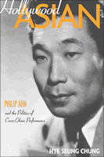

How a Korean American actor became a Hollywood "Oriental" star
How a Korean American actor became a Hollywood "Oriental" star


 How a Korean American actor became a Hollywood "Oriental" star
How a Korean American actor became a Hollywood "Oriental" star

|  |
Hollywood AsianPhilip Ahn and the Politics of Cross-Ethnic PerformanceHye Seung Chungpaper EAN: 978-1-59213-516-5 (ISBN: 1-59213-516-1) |
"In this beautifully crafted book, Chung convinces that the career of Korean American actor Philip Ahn offers a veritable history of American racial politics and performance. Remarkable is Chung's deft examination of cross-ethnic performance and of Asian American spectatorship. Writing Ahn into Korean film and cultural history, Hollywood Asian offers an important transnational contribution to Asian American, film, and cultural studies."
—Nancy Abelmann, Professor of Anthropology, Asian American Studies, East Asian Languages, and Cultures University of Illinois at Urbana-Champaign
From silent films to television programs, Hollywood has employed actors of various ethnicities to represent "Oriental"characters, from Caucasian stars like Loretta Young made up in yellow-face to Korean American pioneer Philip Ahn, whose more than 200 screen performances included roles as sadistic Japanese military officers in World War II movies and a wronged Chinese merchant in the TV show Bonanza.
The first book-length study of Korean identities in American cinema and television, Hollywood Asian investigates the career of Ahn (1905-1978), a pioneering Asian American screen icon and son of celebrated Korean nationalist An Ch'ang-ho. In this groundbreaking scholarly study, Hye Seung Chung examines Ahn's career to suggest new theoretical paradigms for addressing cross-ethnic performance and Asian American spectatorship. Incorporating original material from a wide range of sources, including U.S. government and Hollywood screen archives, Chung's work offers a provocative and original contribution to cinema studies, cultural studies, and Asian American as well as Korean history.
"'We have ways of making you talk, G.I.' When the World War II generation of Americans heard those words, it was Philip Ahn talking. A prolific film actor, son of a famous Korean nationalist and a committed political activist in his own right, Ahn was forced to take one stereotypical role after another. But he displayed his virtuosity across the full range of Hollywood pigeonholing, from obsequious, dutiful son to sinister, evil villain. Hye Seung Chung's fascinating and deeply researched book deploys a sharp critical lens to examine Ahn's life and career, thus retrieving from a lost history one of the most interesting and important Asian American actors of the 20th century."
—Bruce Cumings, Professor of History, University of Chicago, and author of North Korea: Another Country
"You'll never again view Philip Ahn in the same light.... Hollywood Asian is meticulously researched, comprising a wealth of secondary text sources and featuring a comprehensive filmography of work by Ahn. In addition, Chung was given access by the Ahn family to primary research material that provides an in-depth and nuanced look into the personal life of the actor, his politics, and his attempt to break into the South Korean film business. This is an excellent and important contribution to the scholarly literature."
—Darrell Y. Hamamoto, Professor of Asian American Studies, University of California, Davis, and co-editor of Countervisions: Asian American Film Criticism
"Hollywood Asian is an exciting and original contribution to Asian American and Korean Studies.... It is clearly written, making it accessible to a wide readership in a number of disciplines."
—Chris Berry, Goldsmiths College, University of London
"The author has succeeded in bringing an oft-neglected artist and part of film history back into the forefront of scholarly literature. Highly recommended."
—Library Journal
"[Chung] gives us an interesting look at a pioneering Asian American actor and the forces that shaped him and vice versa."
—Asian Week
"Chung crafts a compelling exploration of how the cinematic representation of Korea and its people became a palimpsest for American domestic and foreign anxieties....the exemplary depth and nuance to Hollywood Asian�s analysis highlights the complex but intimate ways that America�s cultural imagination is tied into international relations and tensions."
—
The International Journal of Communication
"[F]ascinating...this book makes an excellent contribution to the growing body of work on Asian Americans in the cinema...Essential."
—Choice
"Chung�s book is well researched and well written. Unless the reader is a film historian, much of the content is new and illuminating....Chung makes a critical point about the persistence of reductive images and perception."
—Korean Quarterly
"Chung paints a fascinating portrait...While the book is theoretically provocative, it is at its best when reporting little-known information about Ahn and the Asian American actors with whom he worked...By illuminating the rich and complex career of a Korean American trailblazer in Hollywood cinema, Hollywood Asian should prove quite useful for scholars in Asian and Asian American studies and U.S. film history."
—The Journal of American History
List of Illustrations
Acknowledgments
Introduction
Part I: Asian American Acts: Performance and Spectatorship
1. Portrait of a Patriot's Son: Philip Ahn and Korean Diasporic Identities in Hollywood
2. The Audience Who Knew Too Much: Oriental Masquerade and Ethnic Recognition among Asian Americans
Part II: Oriental Genres, 1930s to 1950s
3. Between Yellowphilia and Yellowphobia: Asian American Romance in Oriental Detective Films
4. State Intervention in the Imagining of Orientals in China Films of the 1930s and 1940s
5. Hollywood Goes to Korea: War, Melodrama, and the Biopic Politics of Battle Hymn
Conclusion
6. Becoming "Father," Becoming Asian American
Filmography
Bibliography
Hye Seung Chung is Assistant Professor of Film and Media Studies in the Department of Communication Studies at Colorado State University. Her writing has appeared in the anthologies South Korean Golden Age Melodrama and New Korean Cinema.
Asian American Studies
Cinema Studies
© 2015 Temple University. All Rights Reserved. This page: http://www.temple.edu/tempress/titles/1854_reg.html.